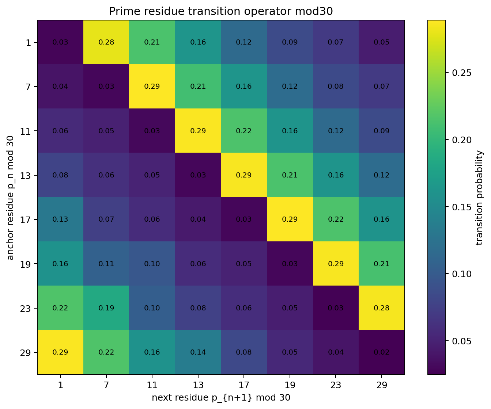
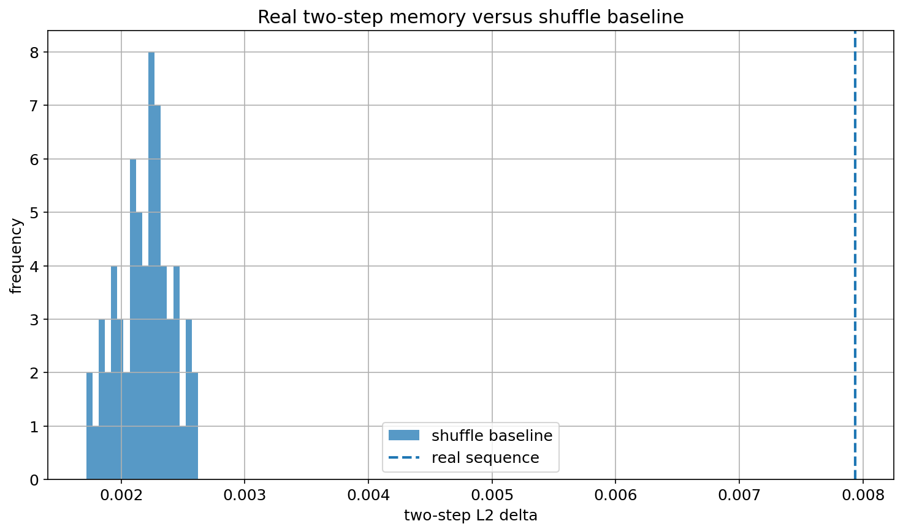
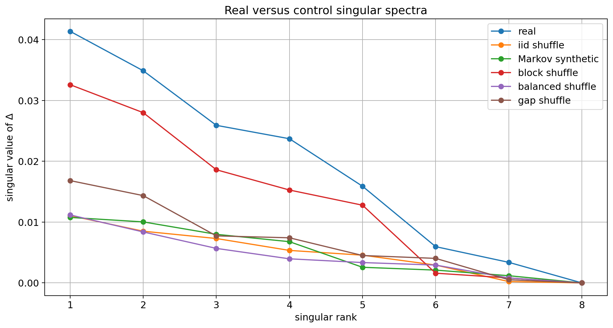
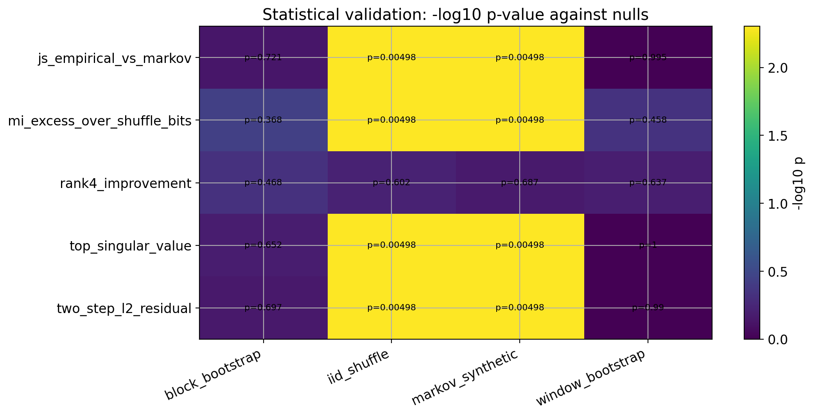
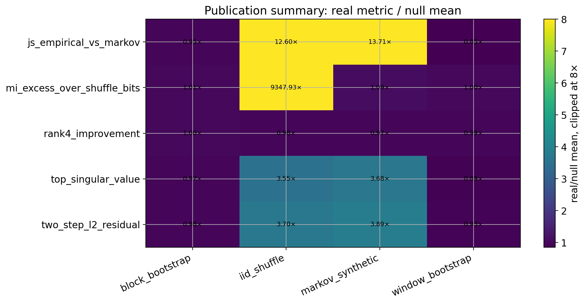

Higher-Order Structure in Residue-Class Transitions of Consecutive Primes
Abstract
We encode consecutive primes as residue classes modulo \(30\), producing a sequence over 8 states \(\{1,7,11,13,17,19,23,29\}\). We construct a first-order transition operator \(P\) and compare the empirical two-step operator \(P^{(2)}\) to the baseline \(P^2\) via \(\Delta = P^{(2)} - P^2\).
Using the first \(N\) primes, \(\Delta\) has low-rank structure. Low-rank approximations improve prediction of \(P^{(2)}\) relative to \(P^2\).
Synthetic controls produce distinct residual operators. Residue-class transitions of consecutive primes modulo \(30\) are represented by the residual operator \(\Delta = P^{(2)} - P^2\), which exhibits higher-order structure.
1. Introduction
We study transitions of consecutive primes. Reducing them modulo \(30\) yields a sequence over 8 residue states \(\{1,7,11,13,17,19,23,29\}\).
We construct a transition operator \(P\) and compare \(P^{(2)}\) to \(P^2\). The residual
isolates second-order structure.
We test whether \(\Delta\) reflects random variation or systematic structure.
3. Transition Framework
Let \(\{x_n\}_{n=1}^{N}\) be residues modulo \(30\) of the first \(N\) primes.
We estimate
Define
4. Results
Figure 1 shows the transition operator \(P\).

Figure 2 shows the residual \(\Delta = P^{(2)} - P^2\), with structured deviations.

Figure 3 shows low-rank structure in \(\Delta\).

Figure 4 shows statistical validation across controls.

Figure 5 shows summary ratios for empirical and control statistics.

5. Validation
The prime sequence differs from iid and Markov control sequences in the residual operator \(\Delta\). Block resampling shows partial agreement, indicating local structure.
6. Discussion
The operator \(\Delta\) isolates second-order structure relative to \(P\). Its structure is low-rank, with deviations concentrated in a small number of components.
A small number of components approximates \(P^{(2)}\) more accurately than \(P^2\).
This structure persists across sample sizes \(N\).
7. Conclusion
Residue-class transitions of consecutive primes modulo \(30\) are represented by the residual operator \(\Delta = P^{(2)} - P^2\), which exhibits higher-order structure.
References
- David Aldous. Random walks on finite groups and rapidly mixing Markov chains. Séminaire de Probabilités, 1983.
- Thomas Cover and Joy Thomas. Elements of Information Theory. Wiley, 2006.
- Harald Cramér. On the order of magnitude of prime gaps. Acta Arithmetica, 1936.
- G. H. Hardy and E. M. Wright. An Introduction to the Theory of Numbers. Oxford University Press, 1979.